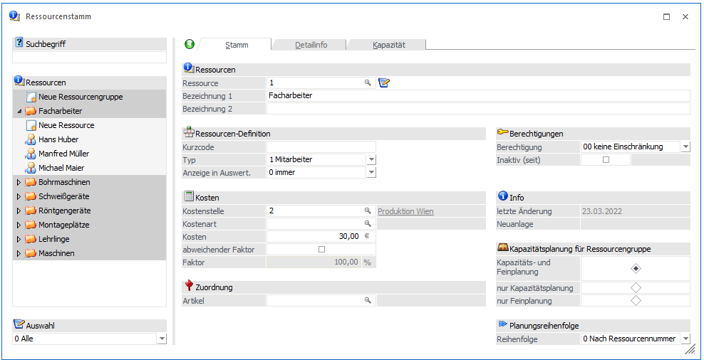
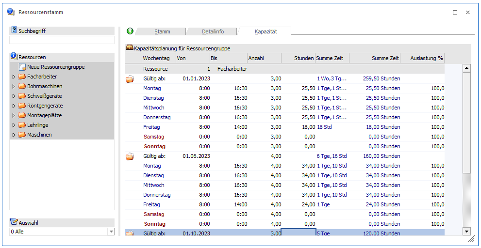
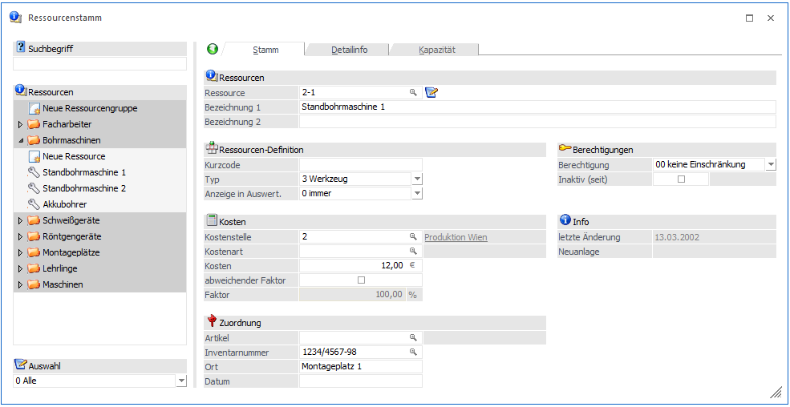
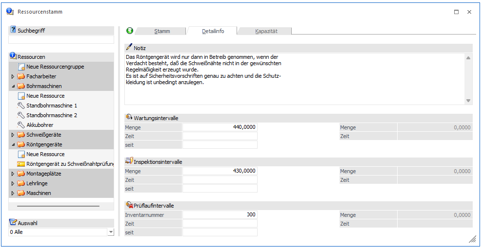
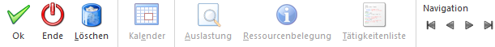
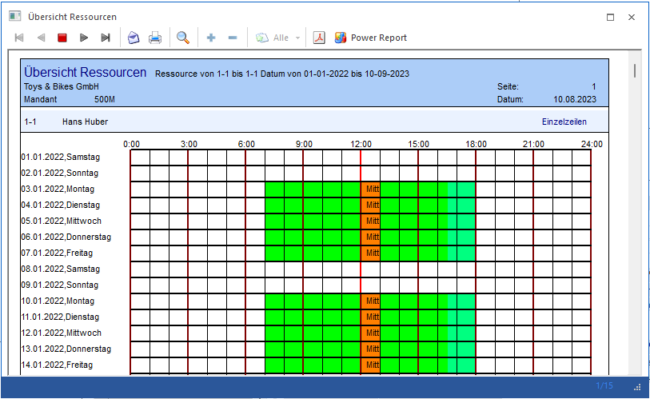
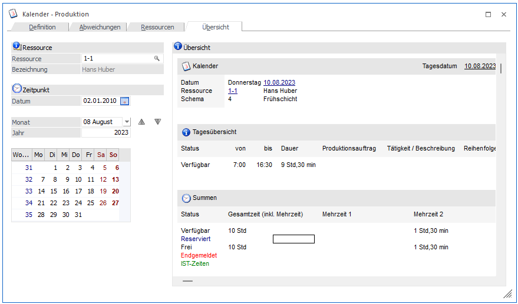
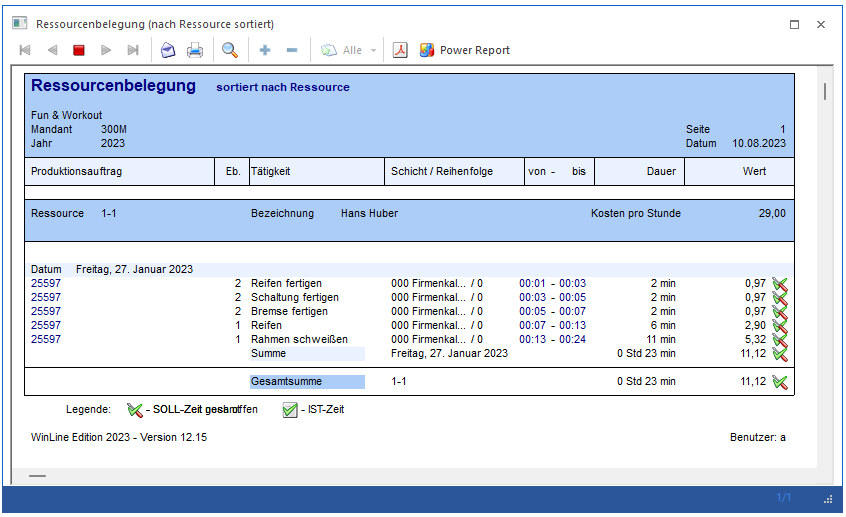

Im Programmbereich
1 WinLine PPS
1 Stammdaten
1 Ressourcenstamm
werden alle Ressourcen definiert, die zur Produktion der Fertigprodukte benötigt werden.
Grundsätzlich können Ressourcen
ü - Mitarbeiter
ü - Maschinen
ü - Werkzeuge
ü - Prüfmittel
sein. Gleichartige Ressourcen werden zu Ressourcengruppen zusammengefasst. Für die Planung ist es wichtig, gleiche Ressourcen die wahlweise für die Durchführung einer Tätigkeit verwendet werden, zu Gruppen zusammenzufassen. So kann die Planung auf Basis der Gruppe erfolgen und erst später entschieden werden, welche individuelle Ressource die Tätigkeit durchführt.
Beispiel
Im Unternehmen werden drei Mitarbeiter beschäftigt, die eine Schweißerprüfung haben. Sie werden zu Gruppe "Schweißer" zusammengefasst. Bei der Planung des Projektes stehen grundsätzlich alle drei Mitarbeiter zur Verfügung. Bei der Disposition des Projektes wird entschieden, ob ein Schweißer das gesamte Projekt allein realisiert oder ob mehrere Schweißer gleichzeitig zusammenarbeiten.
Ressourcenübersicht
Im linken Bereich des Fensters wird eine Übersicht aller Ressourcen in Form eines Ressourcenbaumes dargestellt. Diese Anzeige kann über die folgenden Felder gefiltert werden:
Ø Suchbegriff
Hier kann ein Suchbegriff eingegeben werden, nach dem die Anzeige der Ressourcen eingeschränkt wird. Die Suche erfolgt über die Felder "Bezeichnung 1+2", sowie über "Verweisnummer" und "Ort".
Ø Auswahl
Hier kann über die Auswahlbox eingeschränkt werden, welche Ressourcen-Typen angezeigt werden sollen.
Eingabefelder für Ressourcengruppen (Stamm/Kapazität)
Die Auswahl der Ressourcengruppe die bearbeitet werden soll, wird durch einen Klick auf die entsprechende Ressourcengruppe vorgenommen.
Soll eine neue Ressourcengruppe definiert werden, so ist das Symbol
auszuwählen.

Es stehen folgende Eingabefelder bzw. Elemente zur Verfügung:
Ø Ressource
Die Nummer der Ressourcengruppe wird vom System automatisch vorgeschlagen, kann aber vom Anwender manuell vergeben werden, falls diese Nummer noch nicht vorhanden ist.
Die Ressourcennummer kann durch Drücken des Buttons nachträglich editiert werden.
Ø Bezeichnung 1 + 2
Eingabe eines Textes, der die Ressourcengruppe möglichst eindeutig beschreibt. Die erste Zeile dieses Beschreibungstextes dient in den meisten Auswertungen und dem Matchcode-Fenster als Beschreibung der Ressourcengruppe. Die zweite Zeile ist ein zusätzlicher Text, der für Auswertungen genutzt werden kann.
Ø Kurzcode
Auf einigen Auswertungen wir dieser Kurzcode anstelle der Ressourcengruppennummer bzw. der Ressourcengruppenbezeichnung angedruckt.
Ø Typ
Eingabe des Ressourcentyps, der angelegt wird. Grundsätzlich sind die Typen Mitarbeiter, Maschine, Prüfmittel und Werkzeug möglich. Diese Einstellung wird dann auf die einzelnen Ressourcen übernommen.
Ø Anzeige in Auswert.
Hier kann eingestellt werden, ob die Ressourcengruppe in bestimmten Programmbereichen für eine Schichtauswahl zur Verfügung stehen soll. Dazu stehen folgende Einstellungen zur Verfügung:
ü 0 - immer
ü 1 - nur wenn selektiert
Hinweis
Wenn die Schichtauswahl (Selektion nach einer bestimmten Schicht) z.B. im Programmbereich "Materialentnahme" (WinLine PPS - Produktion - Materialentnahme) genutzt werden soll, dann muss an dieser Stelle die Einstellung "1 - nur wenn selektiert" hinterlegt werden.
Ø Berechtigung
Für jede Ressourcengruppe kann ein Berechtigungsprofil vergeben werden. Wenn der Anwender eine Gruppe aufruft, wird geprüft, ob der Anwender einer Benutzergruppe zugeordnet wurde, welche in dem jeweiligen Profil enthalten ist und ob somit eine Bearbeitung erlaubt wäre (nähere Informationen entnehmen Sie bitte dem WinLine ADMIN - Handbuch).
Hinweis
Benutzern des Typs "Administrator" oder mit der Administratorenberechtigung "Benutzeradministrator" steht in der Auswahlbox der Punkt ">> Neues Profil" zur Verfügung. Über die Anwahl dieses Eintrags kann in der Folge ein neues Berechtigungsprofil angelegt werden.
Ø Inaktiv
Wenn eine Ressourcengruppe inaktiv gesetzt wurde, wird diese beim Reservierungslauf nicht mehr berücksichtigt.
Unterhalb der Option "Inaktiv" wird das Datum angezeigt, wann die Ressourcengruppe auf inaktiv gesetzt wurde. Darunter wird das Datum der letzten Änderung und das Datum der Neuanlage angezeigt.
Ø Koststelle
Eingabe der Kostenstelle, für die im Zuge der Fertigungsmeldung eine Buchung gebildet werden kann. Diese Kostenstelle dient bei den in der Ressourcengruppe angelegten Ressourcen als Vorschlag.
Ø Kostenart
Eingabe der Kostenart, für die im Zuge der Fertigungsmeldung eine Buchung gebildet werden kann. Diese Kostenart dient bei den in der Ressourcengruppe angelegten Ressourcen als Vorschlag.
Ø Kosten
Eingabe der Kosten, die diese Ressourcengruppe pro Stunde verursacht. Diese Kosten sind Grundlage der Kostenvorschau. Diese Kosten dienen bei den in der Ressourcengruppe angelegten Ressourcen als Vorschlag.
Ø Faktor
Hinterlegung eines Faktors in Prozent, der bei der Reservierung berücksichtigt wird. Dieser Faktor dient bei den in der Ressourcengruppe angelegten Ressourcen als Vorschlag.
Beispiel
Wird bei einer Ressource z.B. der Faktor 50% eingetragen (Invalide, ...), so bedeutet das, dass die Ressource nur 50% leisten kann, d.h. die Reservierung für eine Tätigkeit würde hier doppelt so lange dauern, wie bei einer 100%igen Ressource.
Wenn die Ressource einen Faktor von 200% hinterlegt hat (hochqualifizierter Facharbeiter, ...), würde die Reservierung doppelt so schnell erfolgen wie bei einer 100%igen Ressource.
Der Faktor kann für eine gesamte Ressourcengruppe eingetragen werden oder auch für jede einzelne Ressource.
Wenn bei einer Tätigkeit mehrere Ressourcen benötigt werden, so gilt der niedrigste Faktor als der bestimmende Faktor. D.h. sind 3 Ressourcen mit 100% hinterlegt und eine mit 50%, so wird die Tätigkeit doppelt so lange dauern wie normalerweise.
Ø Artikel
In der Ressourcengruppe kann auch ein Artikel eingetragen werden, der bei der Anlage von Ressourcen in den einzelnen Stamm übernommen wird.
Ø Feinplanung
Wenn in den PPS-Parametern eingestellt wurde, dass die Ressourcengruppen - Kapazitätsplanung verwendet werden soll, so kann in der Gruppe noch eingestellt werden, wie die Planung erfolgen soll, wobei es 3 Varianten gibt:
ü Kapazitäts- und Feinplanung
Bis
zu dem Stichtag, welcher in den PPS-Parametern eingetragen wurde, wird eine
Feinplanung durchgeführt. Für alle Aufgaben nach diesem Stichtag wird eine
Kapazitäts- bzw. Grobplanung durchgeführt.
ü Nur Kapazitätsplanung
Es wird
nur eine Kapazitäts- bzw. Grobplanung durchgeführt, d.h. es werden nur die
Kapazitäten verwendet, die für den entsprechenden Zeitraum im Register
"Kapazität" eingetragen wurden. In diesem Fall ist es auch nicht notwendig,
einzelne Ressourcen anzulegen.
ü Nur Feinplanung
Bei dieser
Option werden nur Feinplanungen (Aufteilung auf die in der Gruppe hinterlegten
Ressourcen) durchgeführt.
Im Register "Kapazität" können dann - gültig ab einem einzugebenden Stichtag - wöchentlich die geplanten Ressourcen ohne Zuordnung einer bestimmten Ressource eingegeben werden. D.h. es wird nur die Zeitspanne (von - bis) und die Anzahl der vorhandenen Ressourcen eingetragen.

Im Kalender können Ressourcen bzw. Ressourcengruppen einem Kalenderschema zugeordnet werden. Diese hinterlegte Schemazuordnung greift auch im Register "Kapazitäten", indem bei einer neu eingefügten Kapazitätszeile die "Von-Bis"-Uhrzeit pro Tag aus dem Kalenderschema vorgeschlagen wird. Kalender-Abweichungen (z.B. für Mittagessen) beim Kalenderschema werden bei der Reservierung von der gesamt verfügbaren Kapazitätszeit abgezogen.
Eingabefelder für Ressourcen (Stamm/Detailinfo)
Die Auswahl der Ressource die bearbeitet werden soll, wird durch einen Klick auf die entsprechende Ressource vorgenommen.
Soll eine neue Ressource definiert werden, so ist das Symbol
auszuwählen.

Es stehen folgende Eingabefelder bzw. Elemente zur Verfügung:
Ø Ressource
Die Nummer der Ressource wird vom System automatisch vorgeschlagen, kann aber vom Anwender manuell vergeben werden, falls diese Nummer noch nicht vorhanden ist.
Den Nummern von Ressourcen werden die Nummern der zugehörigen Gruppen vorangestellt. Die Nummer der Gruppe kann bei der einzelnen Ressource natürlich nicht mehr verändert werden.
Achtung
Die Nummer der Ressourcen ist ausschlaggebend für die Reservierung der Ressourcen.
Beispiel
Es existieren drei Maschinen welche die gleiche Funktion erfüllen. Maschine Nummer drei produziert allerdings am teuersten und soll in der Regel nicht verwendet werden (sie stellt eine Reserve dar). Bei der Vorbereitung des Projektes kann vereinbart werden, dass fix die ersten beiden Ressourcen verwendet werden sollen. Damit werden nur die Maschinen mit der Nummer 1 und 2 verwendet.
Die Ressourcennummer kann durch Drücken des Buttons nachträglich editiert werden.
Ø Bezeichnung 1 + 2
Eingabe eines Textes, der die Ressource möglichst eindeutig beschreibt. Die erste Zeile dieses Beschreibungstextes dient in den meisten Auswertungen und dem Matchcode-Fenster als Beschreibung der Ressource. Die zweite Zeile ist ein zusätzlicher Text, der für Auswertungen genutzt werden kann.
Ø Kurzcode
Auf einigen Auswertungen wir dieser Kurzcode anstelle der Ressourcennummer bzw. der Ressourcenbezeichnung angedruckt.
Ø Typ
Eingabe des Ressourcentyps, der angelegt wird. Grundsätzlich sind die Typen Mitarbeiter, Maschine, Prüfmittel und Werkzeug möglich.
Ø Anzeige in Auswert.
Hier kann eingestellt werden, ob die Ressource in bestimmten Programmbereichen für eine Schichtauswahl zur Verfügung stehen soll. Dazu stehen folgende Einstellungen zur Verfügung:
ü 0 - immer
ü 1 - nur wenn selektiert
Hinweis
Wenn die Schichtauswahl (Selektion nach einer bestimmten Schicht) z.B. im Programmbereich "Materialentnahme" (WinLine PPS - Produktion - Materialentnahme) genutzt werden soll, dann muss an dieser Stelle die Einstellung "1 - nur wenn selektiert" hinterlegt werden.
Ø Berechtigung
Für jede Ressource kann ein Berechtigungsprofil vergeben werden. Wenn der Anwender eine Ressource aufruft, wird geprüft, ob der Anwender einer Benutzergruppe zugeordnet wurde, welche in dem jeweiligen Profil enthalten ist und ob somit eine Bearbeitung erlaubt wäre (nähere Informationen entnehmen Sie bitte dem WinLine ADMIN - Handbuch).
Hinweis
Benutzern des Typs "Administrator" oder mit der Administratorenberechtigung "Benutzeradministrator" steht in der Auswahlbox der Punkt ">> Neues Profil" zur Verfügung. Über die Anwahl dieses Eintrags kann in der Folge ein neues Berechtigungsprofil angelegt werden.
Ø Inaktiv
Wenn eine Ressource inaktiv gesetzt wurde, wird diese beim Reservierungslauf nicht mehr berücksichtigt.
Unterhalb der Option "Inaktiv" wird das Datum angezeigt, wann die Ressource auf inaktiv gesetzt wurde. Darunter wird das Datum der letzten Änderung und das Datum der Neuanlage angezeigt.
Ø Koststelle
Eingabe der Kostenstelle, für die im Zuge der Fertigungsmeldung eine Buchung gebildet werden kann. Hier darf nur eine Produktionskostenstelle hinterlegt werden. Wird eine Verwaltungs- oder Hilfskostenstelle eingegeben, wird eine entsprechende Meldung angezeigt - der Datensatz kann aber trotzdem gespeichert werden. In dem Fall kann aber eine Buchung nicht durchgeführt werden.
Ø Kostenart
Eingabe der Kostenart, für die im Zuge der Fertigungsmeldung eine Buchung gebildet werden kann.
Ø Kosten
Eingabe der Kosten, die diese Ressource pro Stunde verursacht. Diese Kosten sind Grundlage der Kostenvorschau.
Ø Faktor
Hinterlegung eines Faktors in Prozent, der bei der Reservierung berücksichtigt wird.
Beispiel
Wird bei einer Ressource z.B. der Faktor 50% eingetragen (Invalide, ...), so bedeutet das, dass die Ressource nur 50% leisten kann, d.h. die Reservierung für eine Tätigkeit würde hier doppelt so lange dauern, wie bei einer 100%igen Ressource.
Wenn die Ressource einen Faktor von 200% hinterlegt hat (hochqualifizierter Facharbeiter, ...), würde die Reservierung doppelt so schnell erfolgen wie bei einer 100%igen Ressource.
Der Faktor kann für eine gesamte Ressourcengruppe eingetragen werden oder auch für jede einzelne Ressource.
Wenn bei einer Tätigkeit mehrere Ressourcen benötigt werden, so gilt der niedrigste Faktor als der bestimmende Faktor. D.h. sind 3 Ressourcen mit 100% hinterlegt und eine mit 50%, so wird die Tätigkeit doppelt so lange dauern wie normalerweise.
Hinweis
Steht in einer Ressource der Faktor 0 (oder wurde kein Faktor hinterlegt) dann bedeutet dies, dass diese Ressource jeden gewünschten Produktionsfaktor liefern kann (z.B. Schraubenzieher, Montageplatz, ...). D.h. es ist darauf zu achten, wenn man mit Faktoren arbeitet, dass bei Ressourcen, die höchstens 100% leisten können, auch der Faktor von 100% hinterlegt wurde.
Im Tätigkeitenstamm kann ebenfalls ein Faktor eingetragen werden, der den aus dem Ressourcenstamm übersteuert.
Ø Artikel
Wird die ausgewählte Ressource in der Fakturierung zur Erfassung von Ist-Zeiten bei Serviceprojekten verwendet, so kann hier der Verrechnungsartikel für diese Ressource hinterlegt werden. Das bedeutet, dass die Kosten der Ressource auf der Faktura unter diesem Artikel ausgewiesen werden. Normalerweise wird dies ein lagerneutraler Verrechnungsartikels sein (nähere Informationen diesbezüglich entnehmen Sie bitte dem Handbuch Fakturierung Kapitel Serviceprojekte).
Ø Verweisnummer
Eingabe einer zusätzlichen Information. Diese könnte beispielsweise die Serien- oder Inventarnummer der Maschine sein.
Zusätzlich zum Eingabefeld steht ein Matchcode zur Verfügung, mit dem, je nach Einstellung des "Typs" (Mitarbeiter, Maschine, ...), eine Arbeitnehmer- oder Anlagennummer übernommen werden kann.
Ø Ort
Aufstellungs- bzw. Einsatzort der Ressource.
Ø Datum
Eingabe eines Datums zu Informationszwecken.
Durch einen Wechsel in den Bildschirmabschnitt "Detailinfo" stehen je nach Ressourcentyp weitere Felder zur Bearbeitung zur Verfügung.

Ø Notiz
Eingabe eines Textes, der Kommentare und Anweisungen zur jeweils gewählten Ressource enthält.
Ø Wartungsintervalle
Eingabe der produzierten Menge bzw. des Zeitraumes der zwischen den einzelnen Wartungen liegt.
Ø Inspektionsintervalle
Eingabe der produzierten Menge bzw. des Zeitraumes der zwischen den einzelnen Inspektionen liegt.
Ø Prüflaufintervalle
Eingabe der produzierten Menge bzw. des Zeitraumes der zwischen den einzelnen Prüfungen liegt.
Sowohl Wartungsintervall sowie Inspektions- und Prüflaufintervall werden im Programmpunkt "Wartung" den Ist-Zeiten bzw. -mengen gegenübergestellt. In diesem Programmbereich können die Ressourcen auch für die Dauer ihrer Wartung gesperrt werden, d.h. sie können dann bis zu ihrer Freigabe nicht mehr verplant werden.
Wurden die Ressourcen definiert, können diese zu Tätigkeiten zusammengefasst werden.
Buttons

Ø OK
Speichern der Änderung bzw. Neuanlage.
Ø Ende
Der Programmbereich wird verlassen.
Ø Löschen
Durch Drücken dieses Buttons können Ressourcen gelöscht werden. Voraussetzung dafür ist, dass sie in keinen Produktionsaufträgen verwendet werden bzw. dass in den PPS-Parametern eine Rückfalls-Ressource hinterlegt ist.
Ø Auslastung
Für die gewählte Ressource wird gezeigt, wann die Ressource grundsätzlich verfügbar ist, wann sie an welchen Projekten arbeitet und zu welchen Fehlzeiten die Ressource nicht verfügbar ist. Ein Klick auf die Produktionsauftragsnummer aktiviert einen Hyperlink und Details des Projektes werden angezeigt.

Ø Kalender
Im Kalender wird die Auslastung der Ressource durch Projekte am aktuellen Tag angezeigt, bzw. welches Potential die einzelnen Ressourcen noch haben. Darüber hinaus können hier die Ressourcenrelevanten Kalendereinträge (Anwesenheit, etc.) bearbeitet werden. Details zum Kalender entnehmen Sie dem Kapitel Kalender - Produktion.

Ø Ressourcenbelegung
Über die Ressourcenbelegung kann die momentane Gesamtauslastung der Ressource und die dadurch verursachten Kosten angezeigt werden.

Ø Tätigkeitenliste
Durch Anklicken des Buttons wird eine Liste aller Tätigkeiten ausgegeben, bei der die aktuell angewählte Ressource hinterlegt ist.
Ø Navigation VCR
Mit den VCR-Buttons kann zwischen den einzelnen Stammdatensätzen (Ressourcen) geblättert werden.